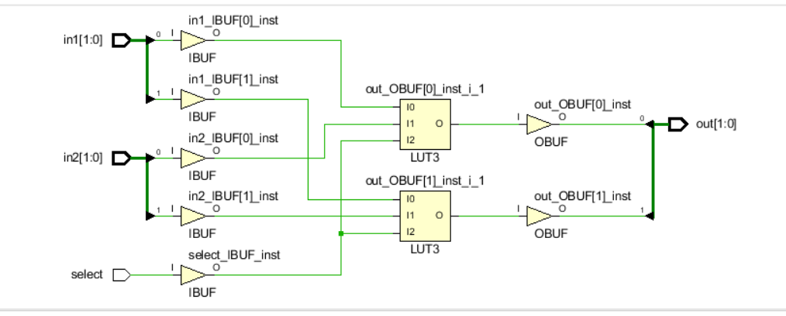

• 128 MiB DDR 2 SDRAM
• 16Mbytes SPI (quad 模式) PCM 非易失型存储器
• 16Mbytes 并行 PCM 非易失型存储器
• 10/100 以太网PHY
• USB-UART 和 USB-HID 端口(用于鼠标和键盘)
• 8-bit VGA 端口
• 100MHz CMOS 振荡器
• 72个I/O连接到扩展连接器
• GPIO 包括 8个LED， 5个按键开关，8个拨码开关和2个4位7段数码管
Nexys4 DDR 开发板如下图所示

Verilog HDL 设计语言支持3种设计风格： 门级，数据流级和行为级。 门级和数据流级设计风格通常用于 设计组合逻辑电路，而行为级设计风格既可以用于设计组合逻辑电路又可以设计时序逻辑电路。本次实验 通过使用Vivado 2015.1软件工具，以Basys3和Nexys4 DDR开发板为目标板，设计简单的组合逻辑电路来 展示3种设计风格的用法。请参考Vivado手册了解如何使用Vivado工具创建工程并验证数字电路。
Nexys4 DDR 特性如下: (译者注：开发板各批次参数不同，仅供参考
• 128 MiB DDR 2 SDRAM
• 16Mbytes SPI (quad 模式) PCM 非易失型存储器
• 16Mbytes 并行 PCM 非易失型存储器
• 10/100 以太网PHY
• USB-UART 和 USB-HID 端口(用于鼠标和键盘)
• 8-bit VGA 端口
• 100MHz CMOS 振荡器
• 72个I/O连接到扩展连接器
• GPIO 包括 8个LED， 5个按键开关，8个拨码开关和2个4位7段数码管
Nexys4 DDR 开发板如下图所示
Verilog HDL 支持内建的原始的门级设计。门级支持包括多输入、多输出、三态和拉态。 多输入门支持包括： and, nand, or, nor, xor, 和xnor，它们的输入为2个及以上，输出只有1个。多输出门支持包括buf 和 not ，它们的输出为2个及以上，输入只有1个。 Verilog HDL语言还支持三态门： bufif0, bufif1, notif0, 和notif1。这些三态门有一个输入，一个控制信号和一个输出。拉门支持包括
pullup和 pulldown，只有一个输出（没有输入）。这些门的零延迟的基本语法如下：
and | nand | or | nor | xor | xnor [instance name] (out, in1, …, inN); // [] is optional and | is
selection
buf | not [instance name] (out1, out2, …, out2, input);
bufif0 | bufif1 | notif0 | notif1 [instance name] (outputA, inputB, controlC);
pullup | pulldown [instance name] (output A);
你也可以在同一语句中，用逗号分隔，创建多个相同类型门的实例，比如：
Verilog HDL语言也允许在实例化门电路时加入延迟。 加入的延迟来自输入或输出。这些延迟可以表达为上升、下降或关断延迟；在一个实例中可以使用1、2或3种延迟。关断延迟可以用于输出能被关掉的门 (如 notif1). 比如，
and #5 A1(Out, in1, in2); // the rise and fall delays are 5 units
and #(2,5) A2(out2, in1, in2); // the rise delay is 2 unit and the fall delay is 5
units notif1 #(2, 5, 4) A3(out3, in2, ctrl1); //the rise delay is 2, the fall delay is 5, and the turn- off delay is 4 unit
由我们数字电路课本的知识我们知道一个2-to-1多路选择器的电路大致如下如所示： 
提示：单击在New Project窗口，Add Source上的绿色加号按钮。然后单击Create File。修改文件名为lab1_1_1，单击OK。确认目标语言和仿真语言都设置为Verilog。单击两次Next。
提示：单击在New Project窗口Add Constraints上的绿色加号按钮。单击AddFile.选择Basys3_Master.xdc (Basys3)或Nexys4DDR_Master.xdc (Nexys4 DDR)。点击Next。
我们可以使用门级建模的方式写，verilog的代码如下：
module lab1.1.1(
input in1,in2,
input select,
output out
);
wire temp1,temp2,temp3;
not (temp1,select);
and (temp2,temp1,in1);
and (temp3,select,in2);
or (out,temp2,temp3);
endmodule
点击Schematic 查看门级建模的设计
我们可以看到大致如下的电路：

由此我们可以知道我们设计的门级建模的确是对的。
编辑XDC文件。去注释并将 SW0 和 SW1赋给in1 和 in2, SW7 给 selecet, LED0给out。保存XDC文件。 生成比特流文件，将其下载到Basys3或Nexys4 DDR开发板，并验证功能
数据流级建模风格主要用于描述组合逻辑电路。一种基本的手法就是使用持续赋值(continuous assignment)。 在持续赋值中，一个值被指派到一种叫做线网(net)的数据类型。
持续赋值的语法为：
assign [delay] LHS_net = RHS_expression;
其中LHSnet是1bit或多bit的目标线网,而RHSexpression是一个包含各种运算符(operator)的表达式 (expression) 。该语句在任何时候都对源操作数值的任何更改进行运算，并将结果经过延迟单元后赋值给目标线网。在Part 1 中的门级建模风格的例子可以用数据流级建模风格的持续赋值表达。比如：
assign out1 = in1 & in2; // perform and function on in1 and in2 and assign the result to out1
assign out2 = not in1;
assign #2 z[0] = ~(ABAR & BBAR & EN); // perform the desired function and assign the result after 2 units
持续赋值语句中的目标可以是下面的一种:
1.标量线网scalar net (比如上面第1和2个例子)
2.向量线网Vector net
3.向量线网的常数位选定Constant bit-select of a vector (比如上面第3个例子)
4.向量线网的常数部分选定Constant part-select of a vector
5.以上任意的拼接
我们再举一些例子，其中用到了标量和向量线网：
wire COUNT, CIN; // scalar net declaration
wire [3:0] SUM, A, B; // vector nets declaration
assign {COUT,SUM} = A + B + CIN; // A and B vectors are added with CIN and the result is
// assigned to a concatenated vector of a scalar and vector nets
需要注意的是，多个持续赋值不能使用同一个目标线网。
对应电路图：
由于这里的选择信号select只有一位，在使用数据流级建模的时候，我们需要对简单的选择信号进行简单的位扩展，让选择器更加适合我们使用的情况。
我们可以编写如下的代码来表达：
module lab1.1.2(
input [1:0]in1,in2,
input select,
output [1:0]out
);
wire [1:0]temp1,temp2,temp3,temp4;
assign temp4={select,select};
assign temp1={~select,~select};
assign temp2=temp1&in1;
assign temp3=temp4&in2;
assign out=temp2|temp3;
endmodule
点击Schematic 查看门级建模的设计
我们可以看到大致如下的电路：

编辑XDC文件。去注释并将 SW0 和 SW1赋给in1 和 in2, SW7 给 selecet, LED0给out。保存XDC文件。 生成比特流文件，将其下载到Basys3或Nexys4 DDR开发板，并验证功能
行为级建模通常用于描述复杂的电路。行为级建模主要用于设计时序逻辑电路，但也可以用于设计纯组合逻辑电路。一个电路的行为级建模（语句）如下：
initial Statements
always Statements
一个模块可以包含任意数量的initial和always语句，并且可以在其中包含一个或多个过程语句。这些initial和always语句会同时执行（换句话说，它们用于描述并行的过程，即它们在模块中出现的顺序没有关系），而过程语句是按序执行的（换句话说，它们出现的顺序有影响）。
initial和always语句都在time=0时刻执行，在其余时间只有always语句执行。语法如下：
initial [timing_control] procedural_statements;
always [timing_control] procedural_statements;
其中的过程语句proceduralstatement是下面之一：
过程赋值procedural assignment
条件语句conditional statement
案例语句case statement
循环语句loop statement
等待语句wait statement
initial语句是不可综合的（non-synthesizable）通常用在测试中。always语句是可综合的(synthesizable）并且最终产生的电路可以是组合的也可以是时序的。为了生成组合逻辑电路， always块：(i)不能是对边沿敏感的 (ii)条件语句的每一个分支都需要定义好输出 (iii)case语句中的每个案例（case）需要定义所有输出且必须有一个默认情况（default case）。有关这个话题的更详细讨论在Lab 7中涉及。语句的目标(LHS)须为寄存器（reg）类型; 可以是标量或向量。举个例子：
reg m; // scalar reg type
reg [7:0] switches; // vector reg type
下面是一个2-to-1多路选择器模型的例子。
always @
(x or y or s)
if(s==0)
m=y;
end
else
m=x;
对应电路图：
使用行为级建模风格，创建一个 Verilog module并增加2个2-bit 输入 (in1[1:0], in2[1:0])，1个1bit 选择信号输入(select)和一个2-bit输出(out[1:0])。
添加XDC文件到工程。 编辑XDC文件，将SW0 和 SW1赋给in1[1:0], SW2 和 SW3赋给in2[1:0]， SW7 赋给 select， LED0和 LED1 赋给 out[1:0].
综合你的设计。
实现你的设计。 我们可以编写如下的代码来表达：
module lab1.1.3(
input [1:0]in1,in2,
input select,
output reg [1:0]out
);
always@(*)
begin
if(select)
out=in2;
else
out=in1;
end
endmodule
点击Schematic 查看门级建模的设计
我们可以看到大致如下的电路：

编辑XDC文件。去注释并将 SW0 和 SW1赋给in1 和 in2, SW7 给 selecet, LED0给out。保存XDC文件。 生成比特流文件，将其下载到Basys3或Nexys4 DDR开发板，并验证功能
用门级建模的方式,数据流建模或者行为级建模的方式设计一个4选1的选择器，要求将 SW0 ， SW1，SW2，SW3赋给in1，in2, in3，in4，SW7，SW8 给 selecet1 ，select2.保存XDC文件。生成比特流文件，将其下载到Basys3或Nexys4 DDR开发板，并验证功能